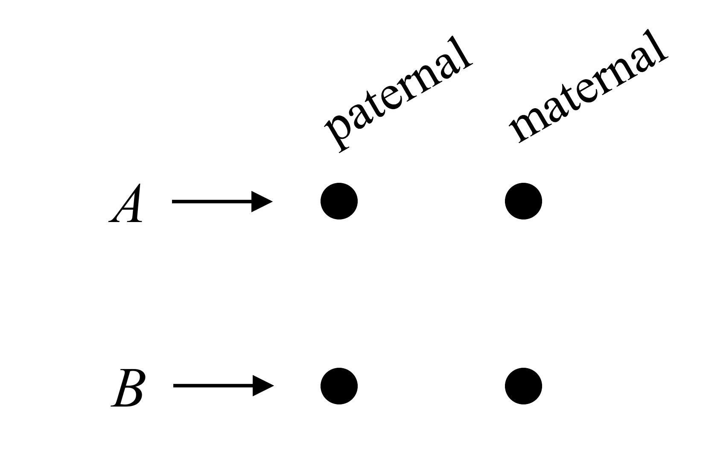
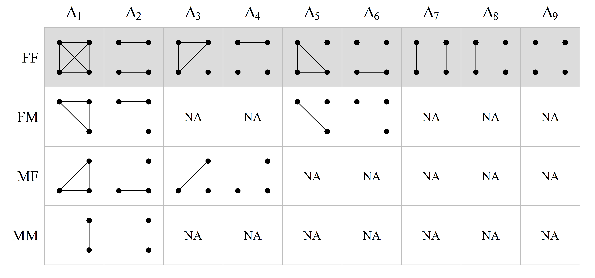
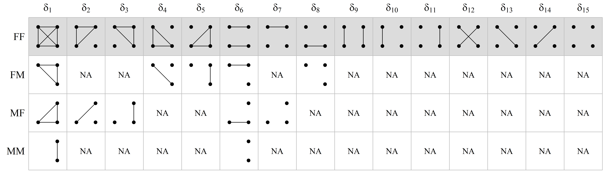

quickped.RmdQuickPed is an interactive web application for drawing and analysing pedigrees. A created pedigree may be saved as an image or as a text file in ped format (see below). You may also obtain various information about the pedigree, including relatedness coefficients and verbal descriptions of relationships.
QuickPed is powered by the ped suite and kinship2 for pedigree plotting. The web app was built with Shiny.
Creating pedigrees with QuickPed is very intuitive: Select a suitable start pedigree and modify it as needed. You may also load an existing ped file (see below). Modifications are done by clicking on one or several individuals and then applying appropriate buttons, for instance to add children, siblings or parents. At any time you may change attributes like sex, affection status, twin status and ID labels.
Selecting individuals. Select/deselect pedigree members by clicking on them. Selected individuals are shown in red colour. Time-saving tip: To deselect everyone, click the “Selection” button under the “Remove” heading.
Automatic labelling. Automatic labelling of the pedigree members are available in two different formats. The button marked 1,2,.. applies numeric labels to all individuals, in the order of their appearance in the pedigree plot. Alternatively, the I-1, I-2,.. button numbers the members generation-wise, using roman numerals to indicate the generation number.
Line breaks in labels. Double spaces are shown as line breaks in the plot labels. For instance, if you want “King Lear” to appear on two lines, modify the label to “King␣␣Lear”, i.e., with two spaces between the words.
Unknown sex. Double clicking on a pedigree member changes its symbol into a diamond, representing unknown sex. Double click again to revert. Note: Only pedigree leaves (members without children) may have unknown sex.
Plot settings. If the pedigree gets too large, increase the plot region using the control panel on the far right. Here you may also adjust the margins, the size of pedigree symbols and text labels.
In the left-most panel of QuickPed the user may choose among a selection of standard pedigrees, including trios, full/half siblings, avuncular and cousin pedigrees of different kinds. Also included are several interesting (albeit less common) pedigree structures like double cousins and quad half first cousins.
Finally, the following historic pedigrees are available:
Habsburg: A subset of the infamously inbred family tree of the Habsburg royalties. The inbreeding coefficient of King Charles II of Spain (1661-1700) was approximately 0.25, i.e., equivalent to that of a child produced by full siblings. Pedigree adapted from Wikipedia. See also The Role of Inbreeding in the Extinction of a European Royal Dynasty.
Jicaque: A pedigree of Jicaque Indians originally studied by Chapman & Jacquard (1971) and subsequently used in many papers on relatedness and pedigree coefficients.
Queen Victoria (haemophilia): The royal family tree descending from Queen Victoria, showing the X-linked inheritance of haemophilia. Adapted from Figure S1 of Genotype Analysis Identifies the Cause of the “Royal Disease”.
Tutankhamun: The family tree of the Egyptian pharao Tutankhamun, as inferred from genetic evidence presented by Hawass et al. (2010), Ancestry and Pathology in King Tutankhamun’s Family.
Under Relationships there are four buttons offering different analyses of relationships within the loaded pedigree. The buttons are, in order:
Describe relationship. Prints a standardised description of the relationship between two selected individuals. The text is generated by verbalisr.
Calculate coefficients. Prints the most important relatedness coefficients between two selected individuals:
Relatedness triangle. Produces a plot representing the IBD coefficients \(\kappa\) as a point in a relatedness triangle. Requires two noninbred individuals to be selected.
Table of coefficients. Activates a popup window where the user can choose among a variety of coefficients, including detailed identity and X-chromosomal coefficients, to be computed for each pair of pedigree members. Generates a tab-separated file for download.
QuickPed calculates a variety of different relatedness coefficients, which we briefly review here for convenience. For more details we recommend e.g. Thompson’s book Statistical Inference from Genetic Data on Pedigrees or Lange’s book Mathematical and Statistical Methods for Genetic Analysis.
For a given pedigree with members \(A\) and \(B\) we define the following:
Following Jacquard (1974) and subsequent authors, the 4 alleles carried by individuals \(A\) and \(B\) at an autosomal locus, can be drawn as dots in a square diagram:

An identity state is a pattern of IBD between the alleles, represented by line segments connecting the alleles.
X-chromosomal identity states and their coefficients are less studied than the autosomal ones, and there are fewer conventions regarding their order and how to draw them. The presentation here does not claim superiority over others; its main purpose is to act as a reference for understanding the output of QuickPed.
As in the autosomal case, the identity coefficients on X are the expected proportions of the possible IBD states involving the alleles at a random locus (on X). The challenge is that the set of states depends on the sex of the two individuals: F/F, F/M, M/F or M/M (where F = female and M = male).
Males are hemizygous on X, with only one allele at each locus (except in a few so-called pseudo-autosomal regions, which we ignore here). Hence, for pairs of individuals including a male, the total number of alleles is less than 4. However, to avoid having to memorise new states for each sex combination, we may re-use the autosomal pictograms by invoking a simple rule: Given an X-chromosomal identity state, replace any hemizygous allele with a pair of autozygous alleles. This rule guides the following table, which shows how to interpret the condensed X-chromosomal coefficients returned by QuickPed. The first row, corresponding to two females, is identical to the autosomal case.

In a similar fashion, the states corresponding to the detailed X-chromosomal coefficients, are as follows:

Note that for hemizygous males, the single allele is drawn on the right side, since it is maternally inherited. It should also be noted that QuickPed always outputs the same number of coefficients (9 condensed; 15 detailed), regardless of sex, but with NA’s in all positions corresponding to undefined states.
A useful feature of QuickPed is to produce text files describing pedigrees in so-called ped format. Such files are often required by software for pedigree analysis.
For a simple illustration, consider this pedigree:
A text file describing this pedigree may contain the following.
id fid mid sex aff
1 0 0 1 1
2 0 0 2 1
3 1 2 2 2The columns are:
id: Individual IDfid: Father’s ID (or 0 if not included in the pedigree)mid: Mother’s ID (or 0 if not inlcuded in the pedigree)sex: Sex (1 = male; 2 = female; 0 = unknown)aff: Affection status (1 = unaffected; 2 = affected; 0 = unknown)It should be noted that the ped format is not completely standardised, and different software may use slightly different versions. For example, a first column with Family ID is sometimes required. Also, the aff column may not be needed in non-medical applications. These and other details may be specified when using QuickPed.
Some pedigree information may be shown on the plot, but is not stored in the ped file. In the current version of QuickPed, this includes twin relationships, carrier status and deceased status.